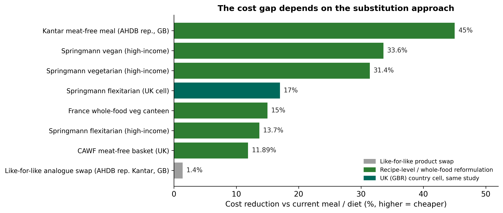
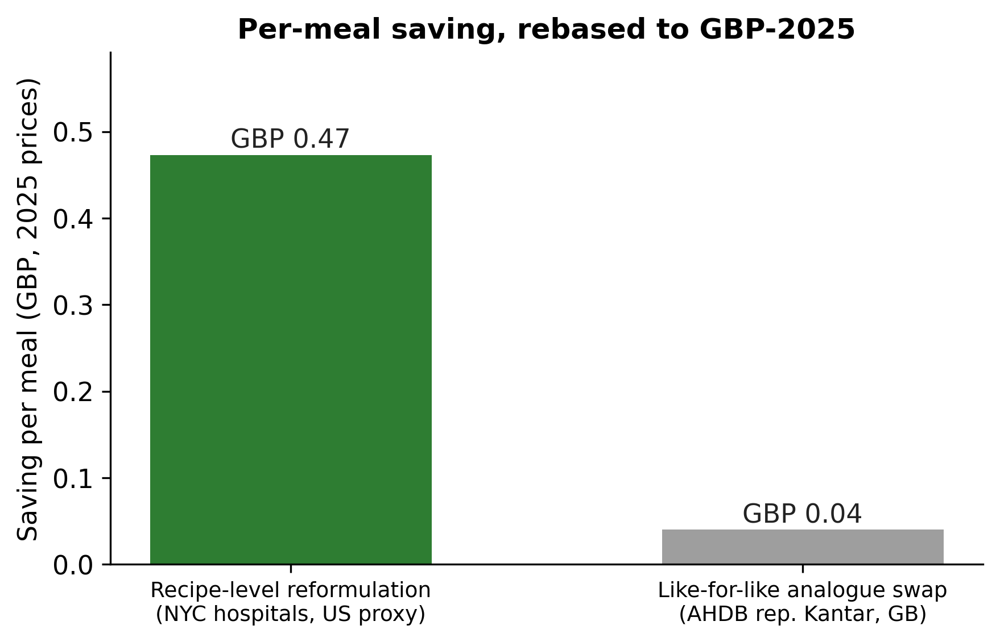
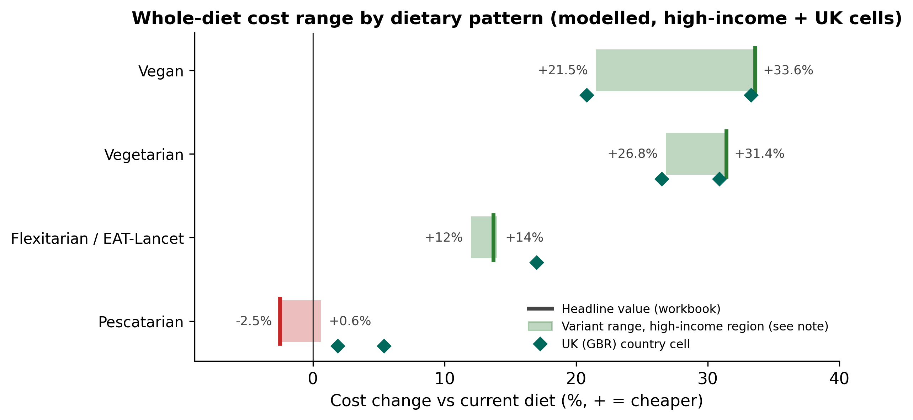
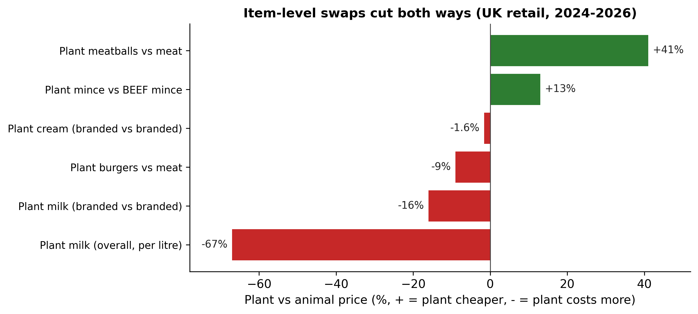

Unlike the Retail and Wholesale tabs, which show this site's own daily price data, this page shows findings from published studies and reports. Sources are cited below each figure; full references are at the bottom of the page.

A like-for-like analogue swap barely moves meal cost (about 4p per meal, grey bar); recipe-level and whole-food approaches are usually substantially cheaper. The Springmann et al. (2021) bars are cells from the study's supplementary data: high-income region cells plus, in teal, the UK country cell for the flexitarian pattern (17.0% cheaper, 95% CI 13.3 to 18.5). These are modelled retail prices, not catering prices. The CAWF (2024) basket is a hypothetical UK comparison priced partly on US dietary data. The France value (Un Plus Bio, 2020) is the ingredient-cost gap between canteens serving a daily vegetarian option and those serving none. Source: AHDB (2025, reporting Kantar); CAWF (2024); Springmann et al. (2021); Un Plus Bio (2020).

The NYC value is the source-native USD 0.59 per meal (2023, self-reported, a tray-level comparison), rebased to 2025 GBP using consumer price indices and 2025 exchange rates; the like-for-like value is the 4p per meal saving reported by AHDB (2025, reporting Kantar) for Great Britain. The two differ in jurisdiction, setting and method as well as substitution approach, so the roughly order-of-magnitude gap illustrates the mechanism, not a controlled estimate. Source: NYC Health + Hospitals (2024); AHDB (2025, reporting Kantar).

Modelled diet costs at International Comparison Program 2017 prices, energy- and nutrient-matched (Springmann et al., 2021). Shaded bands span the high-veg to high-grain variant range for the high-income region, from the study's supplementary data (market cost, 2017): vegan 21.5 to 33.6% cheaper, vegetarian 26.8 to 31.4% cheaper, pescatarian from 2.5% more expensive (high-veg) to near parity (high-grain, 0.6% cheaper). The flexitarian band (12 to 14%) is the paper's income-group span (14% in high-income, 12% in upper-middle-income countries); its tick is the high-income cell (13.7%). Diamonds mark the UK (GBR) country cells: flexitarian 17.0% cheaper (95% CI 13.3 to 18.5), vegetarian 26.5 and 30.9%, vegan 20.8 and 33.3%, pescatarian 1.9 and 5.4% cheaper with both confidence intervals spanning zero (read as parity). Bands are variant ranges, not confidence intervals; values are modelled retail prices, not catering prices. Source: Springmann et al. (2021), including the study's supplementary data.

Mince, meatball and burger figures are from a Tesco price snapshot, January to March 2026, one retailer and one quarter, during a period of rising meat prices in which beef rose fastest (supermarket beef prices up more than 10% year on year at the time, lean beef mince up 23%) (GFI Europe, 2026); the mince bar compares against beef mince specifically. Milk and cream figures are from retail data (GFI Europe, 2025, based on Circana retail sales and NIQ Homescan panel data): the overall per-litre plant-milk premium (67%) is mostly a branding-mix artefact, since branded-versus-branded the gap is 16% and branded plant cream is near parity (1.6% more expensive). Source: GFI Europe (2026, mince and meatballs); GFI Europe (2025, milk and cream).